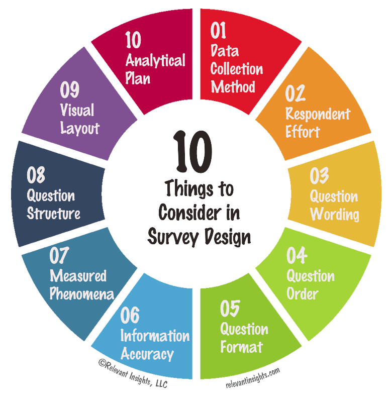

Everything you need to create the best surveys
Get access to survey templates that speak to customers, employees, or your target audience.
Choose from expert-written sample questions to include in your surveys.
Score your surveys to estimate their success rates with SurveyMonkey Genius.
Explore our best practices for creating the even the most sophisticated surveys.

Identify what you want to cover in a survey
Even before you finalize the survey design, it is vital to think about the objective of deploying a survey.
Identify what you want to cover in a study and make sure the topic is clear at once.
Once there is clarity obtained on what the survey will be about, other steps will follow.
Split your core objective into multiple unique points.
The brief should answer some basic questions: What kind of demographic details do you want to capture?
Do you want to calculate Net Promoter Score ? Will it be a micro or macro survey? How many questions do you want
to have? What type of questions should be open-ended? Do you want to add variables to personalize surveys for
respondents?